2026
59
Aromaticity
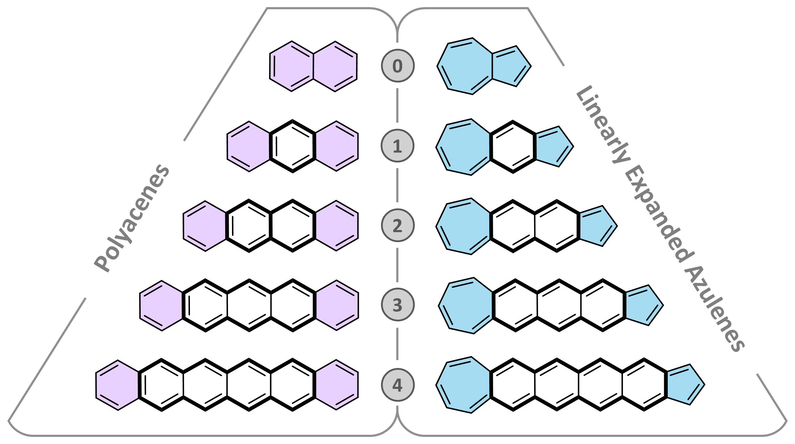
Linearly Expanded Azulenes in the S0, T1, and Qu1 States: A Unified View of Electronic Structure and Aromaticity
Pallavi Sarkar, Itay Almog, and Renana Gershoni-Poranne*
ChemRxiv preprint, August 2026
58
Chemical Bonding
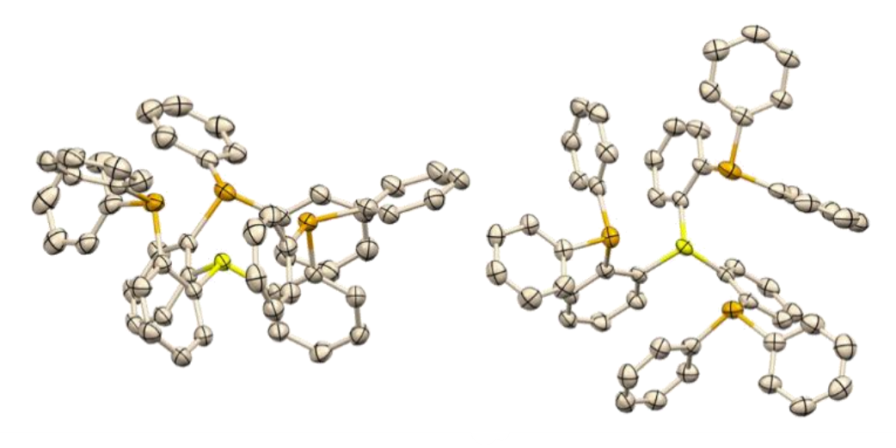
Cationic Sulfonium‐Based Tripodal Ligand and Its Rh(I) Complexes
Nitsan Barel, Shrouq Mujahed, Kamal Uddin Ansari, Katarzyna Młodzikowska‐Pieńko, Renana Gershoni‐Poranne,* and Yuri Tulchinsky*
Chemistry – A European Journal, 2026
57
AromaticityChemical Bonding
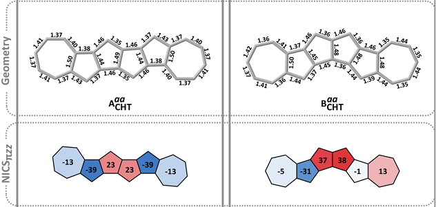
Defying Antiaromaticity - The Curious Case of Pentalenopentalenes
Amrita Gogoi and Renana Gershoni-Poranne*
Chemical Science, July 2026
56
Reaction Mechanisms & Catalysis
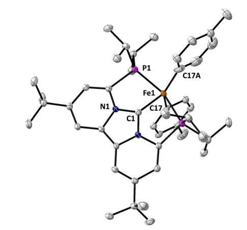
Iron Catalyzed Aryl–Aryl Kumada Cross-Coupling: A Mechanistic and Computational Investigation
Jatin Panda, Magali Gimeno, Amrita Gogoi, Zeqing Chen, Subhash Garhwal, Laura Levy, Alexander Kaushansky, Natalia Fridman, Jos Briggs-Pritchard, Renana Gershoni-Poranne,* Michael L. Neidig,* and Graham de Ruiter*
Angewandte Chemie International Edition, March 2026
55
Aromaticity
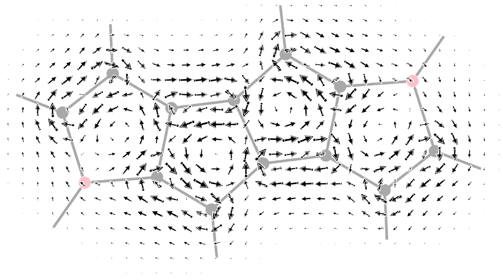
Three Wrongs Make a Right: a Computational Investigation of [4n]–[4n]–[4n] Fused π-Systems
Muhammad Usama Gul Khan, Katarzyna Młodzikowska-Pieńko, Renana Gershoni-Poranne,* and Judy I. Wu*Chemical Science, 2026
2025
54
Aromaticity
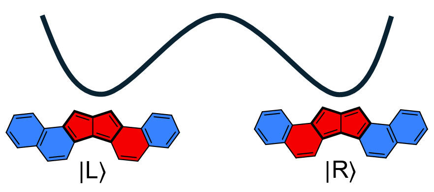
Aromaticity Switching by Quantum Tunnelling
Sindy Julieth Rodríguez, Julián Santoyo-Flores, Katarzyna Młodzikowska-Pieńko, Renana Gershoni-Poranne, and Sebastian Kozuch
Chemical Science, February 2025
53
Reaction Mechanisms & Catalysis
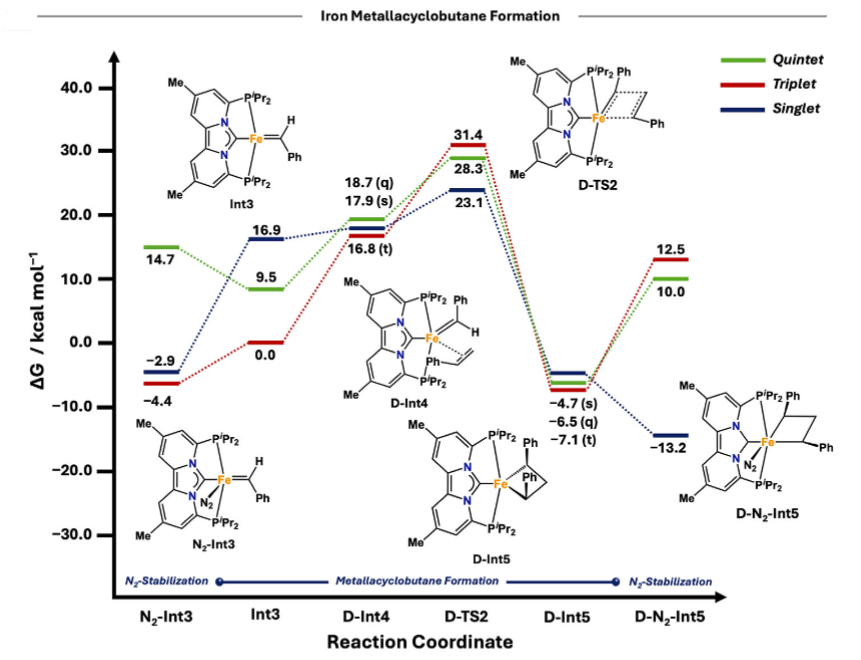
Toward Iron-Catalyzed Alkene Metathesis: Mapping the Reactivity and Deactivation Pathways of an Iron Metallacyclobutane
Katarzyna Młodzikowska-Pieńko, Jatin Panda, Subhash Garhwal, Alexander Kaushansky, Tobias Krämer, Renana Gershoni-Poranne,* and Graham de Ruiter*Angewandte Chemie International Edition, September 2025
52
Aromaticity
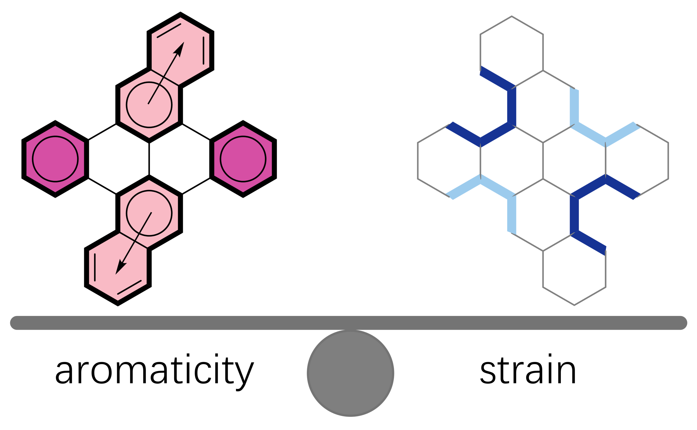
From Rings to Properties: Understanding the Effect of Annelation on Pyrene
Alexandra Wahab and Renana Gershoni-Poranne*Journal of Organic Chemistry, August 2025
51
Aromaticity
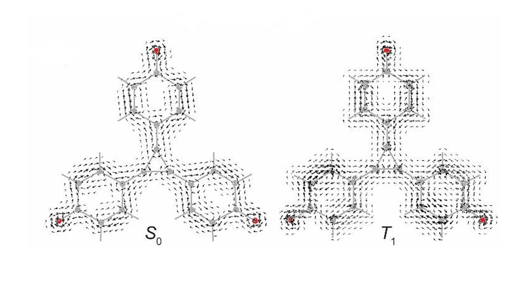
Photoexcited and Ground-State Diradical(oid) Character in a Triquino[3]radialene
Bethany K. Hillier, Damon M. de Clercq, Stephen D. S. Bortolussi, Simona S. Capomolla, Michael P Nielsen, Katarzyna Młodzikowska-Pieńko, Renana Gershoni-Poranne, Timothy W. Schmidt, and Martin D. Peeks*
Chemical Science, May 2025
50
Data & AIAromaticity

COMPAS-4: A Data Set of (BN)1 Substituted Cata-Condensed Polybenzenoid Hydrocarbons—Data Analysis and Feature Engineering
Sabyasachi Chakraborty, Itay Almog, and Renana Gershoni-Poranne*Journal of Chemical Information and Modeling, May 2025
49
Aromaticity
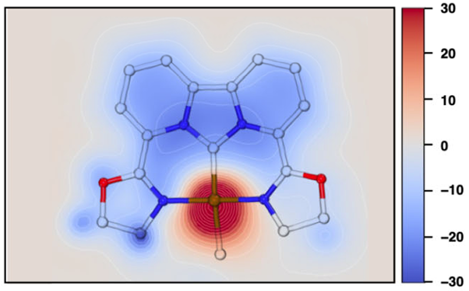
Metallaaromaticity Reimagined: Metallaaromatic Cobalt Macrocycles Through Metal-Ligand Coordination Chemistry
Sakthi Raje, Katarzyna Młodzikowska-Pieńko, Amnon Stanger, Renana Gershoni-Poranne*, and Graham de Ruiter*April 2025
48
Data & AIAromaticity

How Local is 'Local'? Deep Learning Reveals Locality of the Induced Magnetic Field of Polycyclic Aromatic Hydrocarbons
Yair Davidson, Aviad Philipp, Sabyasachi Chakraborty, Alex M. Bronstein*, and Renana Gershoni-Poranne*Journal of Chemical Physics, April 2025
47
Reaction Mechanisms & Catalysis
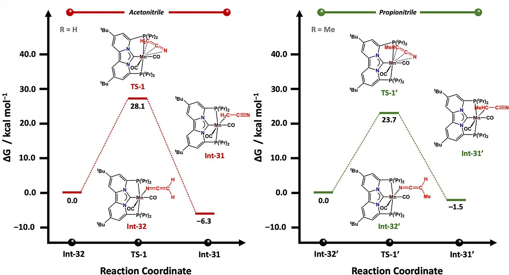
Manganese-Ketenimine Intermediates as Active Catalysts in the Michael Addition of Unactivated Nitriles to α,β-Unsaturated Ketones
Kartick Dey, Akhanda Gorai, Katarzyna Młodzikowska-Pieńko, Natalia Fridman, Idan Avigdori, Renana Gershoni Poranne, and Graham de Ruiter*
Angewandte Chemie International Edition, February 2025
46
Aromaticity
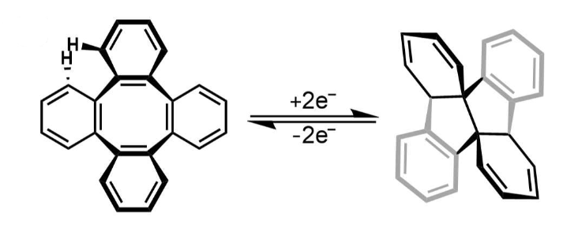
Stabilizing Contorted Doubly-Reduced Tetraphenylene with Heavy Alkali Metal Complexation: Crystallographic and Theoretical Evidence
Yikun Zhu, Zheng Zhou, Zheng Wei, Alexandra Tsybizova, Renana Gershoni Poranne*, and Marina A. Petrukhina*
Chemistry - An Asian Journal, January 2025
45
Aromaticity
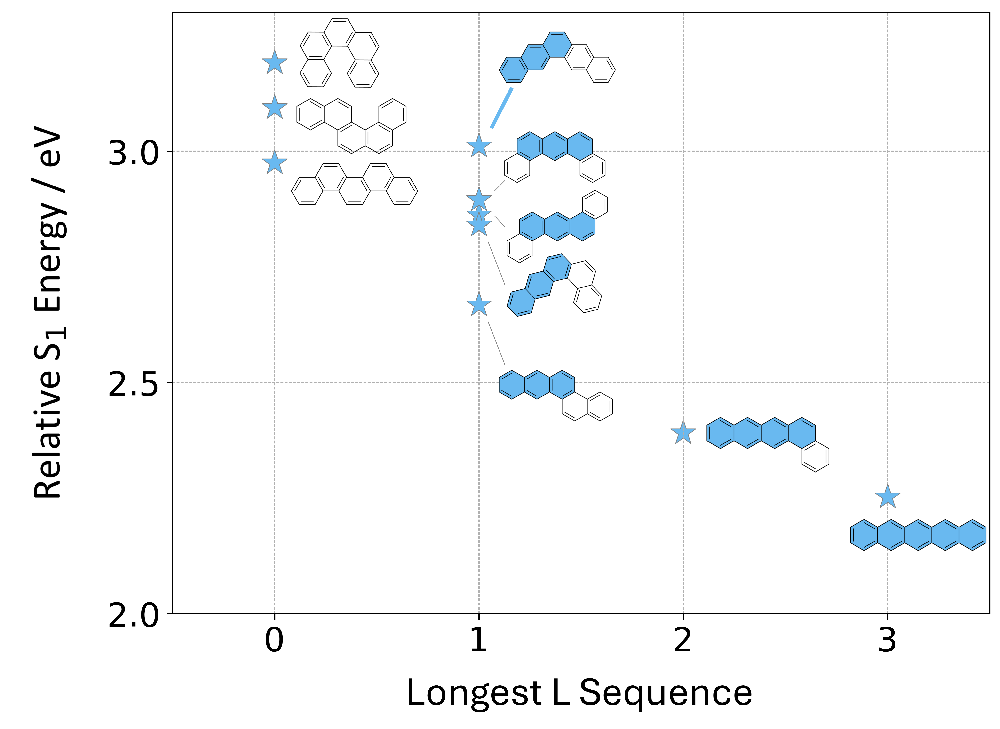
Polybenzenoid Hydrocarbons in the S1 State: Simple Structural Motifs Predict Electronic Properties and (Anti)Aromaticity
Fatimah Khaleel, Sabyasachi Chakraborty, and Renana Gershoni-Poranne*Journal of Physical Organic Chemistry, January 2025
2024
44
Data & AIAromaticity
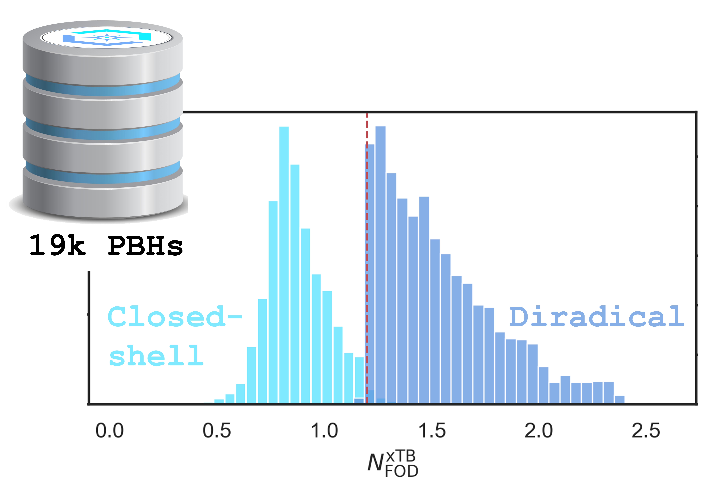
Accelerated Diradical Character Assessment in Large Datasets of Polybenzenoid Hydrocarbons Using xTB Fractional Occupation
Alexandra Wahab and Renana Gershoni-Poranne*Physical Chemistry Chemical Physics, November 2024
43
Aromaticity
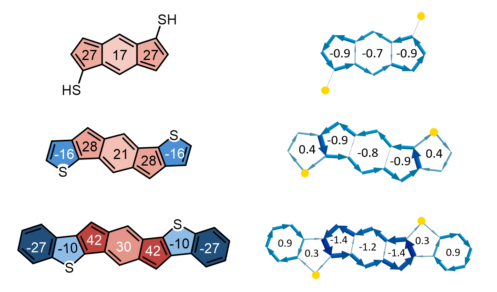
Effects of Benzoheterocyclic Annelation on the s-Indacene Core: a Computational Analysis
Gabrielle I. Warren, Katarzyna Młodzikowska-Pieńko, Said Jalife, Isabella S. Demachkie, Judy I. Wu, Michael M. Haley, and Renana Gershoni-Poranne*
Chemical Science, November 2024
42
Reaction Mechanisms & Catalysis
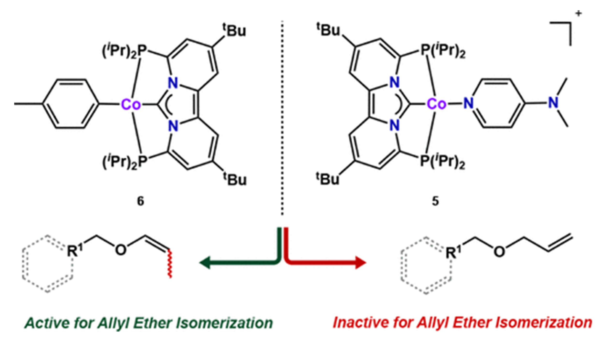
N2 Dissociation vs Reversible 1,2-Methyl Migration in PCNHCP Cobalt(I) Complexes in the Stereoselective Isomerization (E/Z) of Allyl Ethers
Sakthi Raje, Subhash Garhwal, Katarzyna Młodzikowska-Pieńko, Tofayel Sheikh Mohammad, Ron Raphaeli, Natalia Fridman, Linda J. W. Shimon, Renana Gershoni-Poranne,* and Graham de Ruiter*
JACS Au, September 2024
41
Aromaticity
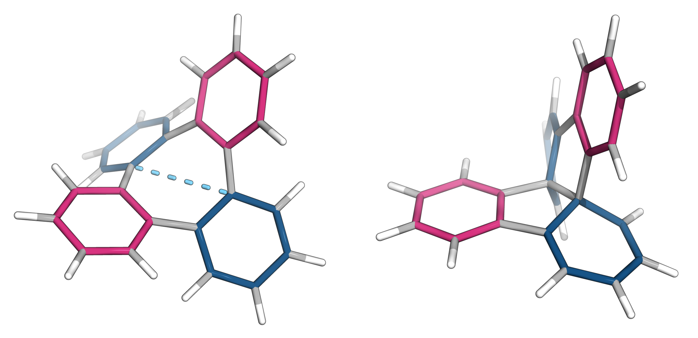
What a Difference an Electron Makes: Structural Response of Saddle-Shaped Tetraphenylene to One and Two Electron Uptake
Yikun Zhu, Zheng Zhou, Zheng Wei, Alexandra Tsybizova, Renana Gershoni-Poranne,* and Marina A. Petrukhina*
ChemistryEurope, September 2024
40
Data & AIAromaticity
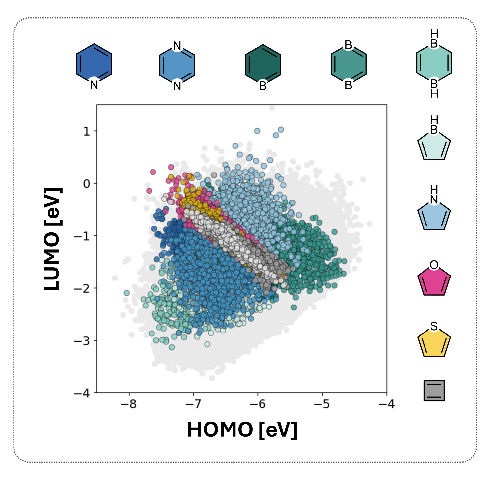
Hetero-Polycyclic Aromatic Systems: A Data-Driven Investigation of Structure–Property Relationships
Sabyasachi Chakraborty, Eduardo Mayo Yanes, and Renana Gershoni-Poranne*Beilstein Journal of Organic Chemistry, July 2024
39
Data & AIAromaticity
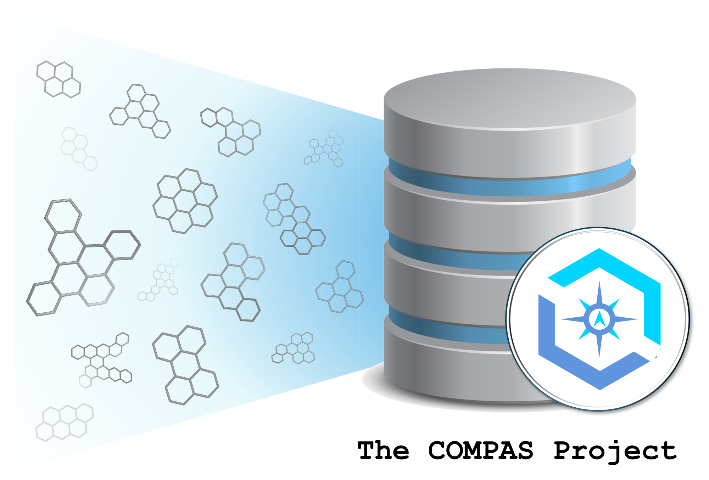
COMPAS-3: a Dataset of peri-Condensed Polybenzenoid Hydrocarbons
Alexandra Wahab and Renana Gershoni-Poranne*Physical Chemistry Chemical Physics, May 2024
38
Data & AI
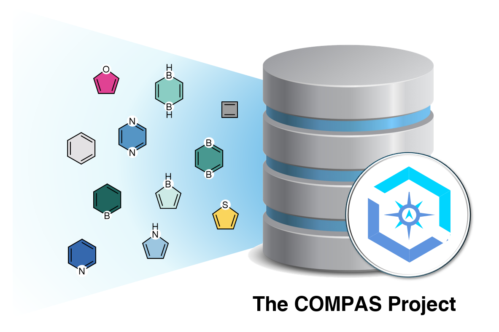
COMPAS-2: a Dataset of cata-Condensed Hetero-Polycyclic Aromatic Systems
Eduardo Mayo Yanes, Sabyasachi Chakraborty, and Renana Gershoni-Poranne*Scientific Data, January 2024
37
Data & AIAromaticity
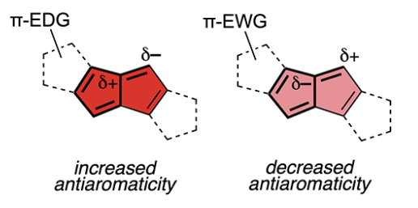
Modulating Paratropicity in Heteroarene-Fused Expanded Pentalenes
Said Jalife, Alexandra Tsybizova, Renana Gershoni-Poranne*, and Judy I. Wu*
Organic Letters, January 2024
2023
36
Chemical Bonding
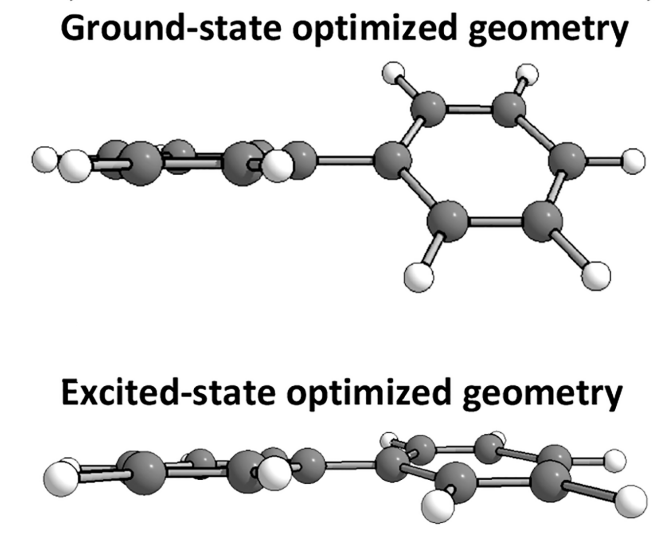
Light-Triggered Enhancement of Fluorescence Efficiency in Organic Cages
Zhenyu Yang, Ramesh Nandi, Anna Orieshyna, Renana Gershoni-Poranne, Shaodong Zhang*, and Nadav Amdursky*
Journal of Physical Chemistry Letters, December 2023
35
Data & AIAromaticity
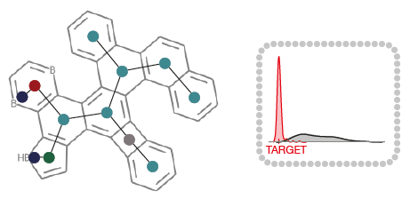
Guided diffusion for Inverse Molecular Design
Tomer Weiss, Eduardo Mayo Yanes, Sabyasachi Chakraborty, Luca Cosmo, Alex M. Bronstein*, and Renana Gershoni-Poranne*Nature Computational Science, October 2023
34
Aromaticity
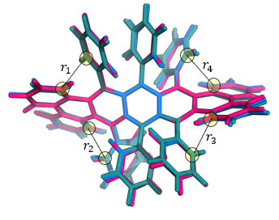
Repercussions of Multi-Electron Uptake by a Twistacene: a Reduction-Induced Double Dehydrogenative Annulation
Matthew Pennachio, Zheng Wei, Robert G. Clevenger, Kathleen V. Kilway, Alexandra Tsybizova, Renana Gershoni-Poranne*, and Marina A. Petrukhina*
Organic Chemistry Frontiers, September 2023
33
Aromaticity
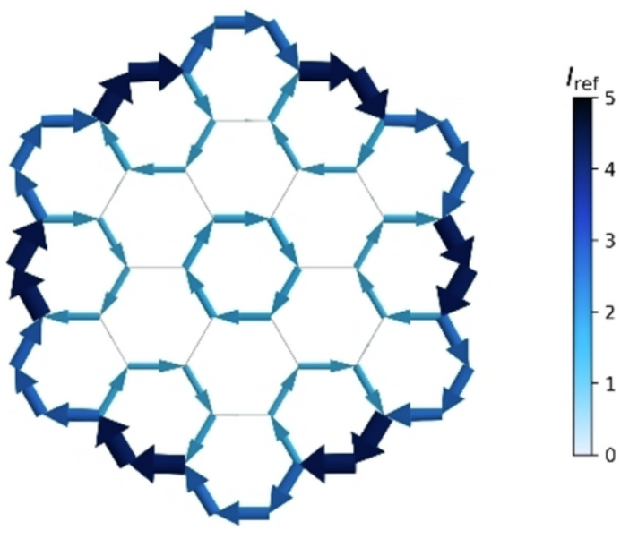
A Crowning Achievement: The First Solution-Phase Synthesis of Circumcoronenes
Renana Gershoni-Poranne* and Alexandra Tsybizova
Angewandte Chemie, May 2023
32
Data & AIAromaticity
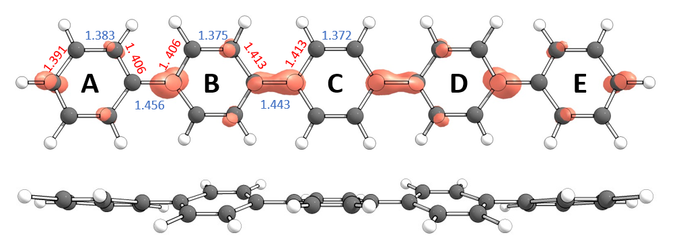
Interplay of Charge and Aromaticity Upon Chemical Reduction of p-Quinquephenyl with Alkali Metals
Matthew Pennachio, Zheng Zhou, Zheng Wei, Alexandra Tsybizova, Renana Gershoni-Poranne*, and Marina A. Petrukhina*
Organometallics, February 2023
2022
31
Data & AI
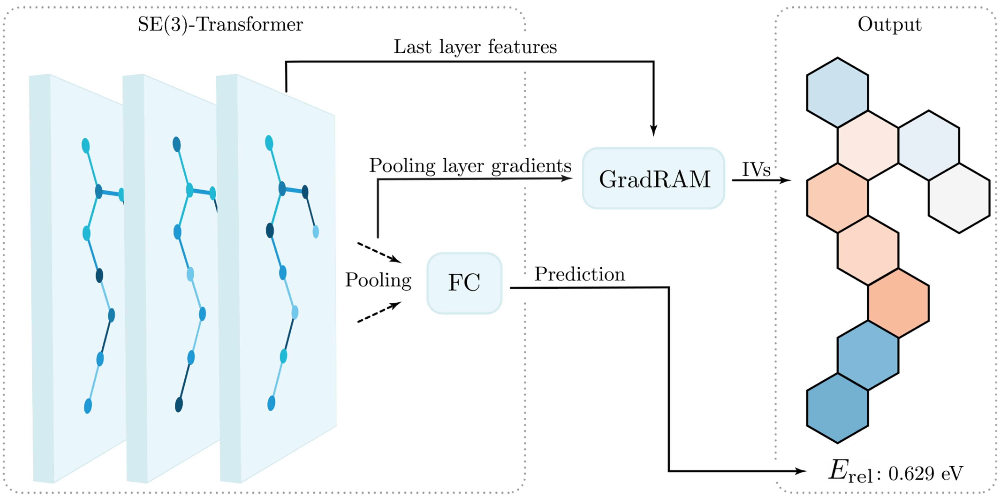
Interpretable Deep-Learning Unveils Structure-Property Relationships in Polybenzenoid Hydrocarbons
Tomer Weiss, Alexandra Wahab, Alex M. Bronstein, and Renana Gershoni-Poranne*The Journal of Organic Chemistry, December 2022
30
Data & AIAromaticity
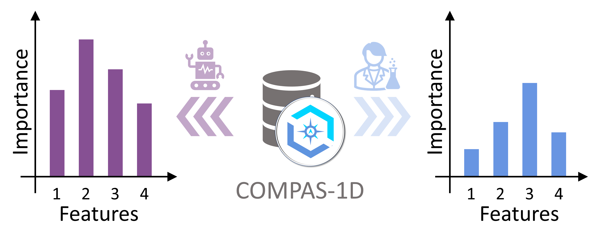
Text-based representations with interpretable machine learning reveal structure–property relationships of polybenzenoid hydrocarbons
Shachar Fite, Alexandra Wahab, Eno Paenurk, Zeev Gross, and Renana Gershoni-Poranne*The Journal of Physical Organic Chemistry, December 2022
29
Data & AIAromaticity
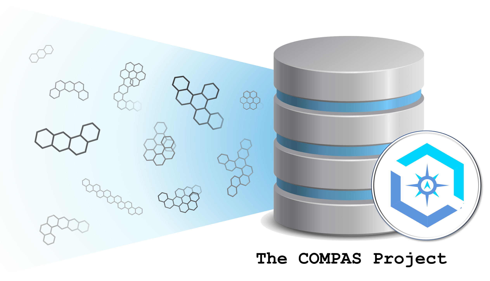
The COMPAS Project: A Computational Database of Polycyclic Aromatic Systems. Phase 1: cata-Condensed Polybenzenoid Hydrocarbons
Alexandra Wahab, Lara Pfuderer, Eno Paenurk, and Renana Gershoni-Poranne*Journal of Chemical Information and Modeling, July 2022
28
Aromaticity
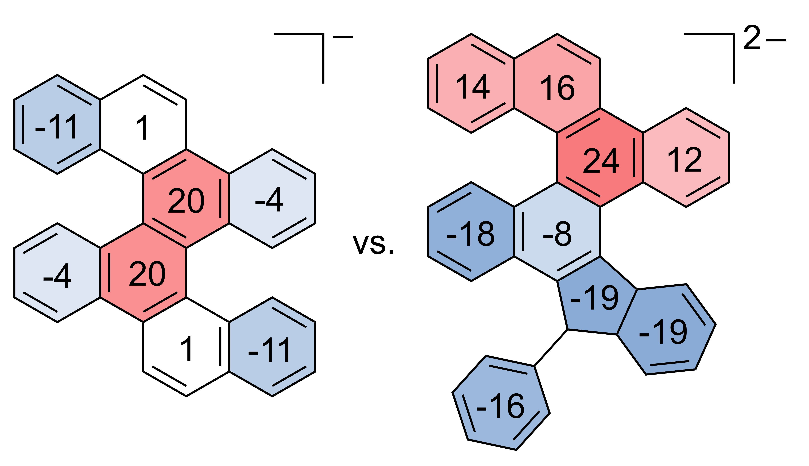
Localized Antiaromaticity Hot-spot Drives Reductive Dehydrogenative Cyclizations in Bis- and Mono-Helicenes
Zheng Zhou, Dominic T. Egger, Chaowei Hu, Matthew Pennachio, Zheng Wei, Rahul K. Kawade, Ökten Üngör, Renana Gershoni-Poranne*, Marina A. Petrukhina*, and Igor V. Alabugin*Journal of the American Chemical Society, June 2022
27
Aromaticity
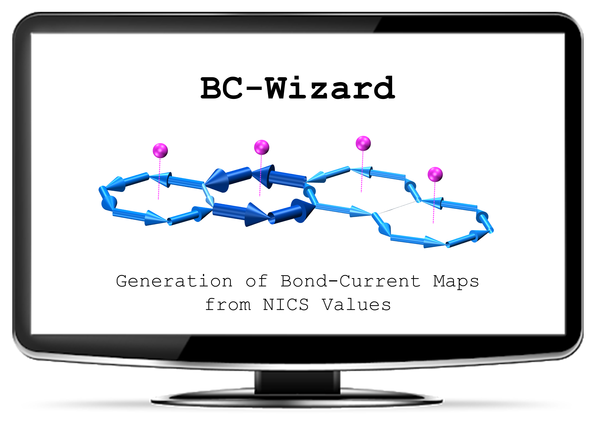
Simple and Efficient Visualization of Aromaticity: Bond Currents Calculated from NICS Values
Eno Paenurk* and Renana Gershoni-Poranne*
Phys. Chem. Chem. Phys., January 2022
Highlighted in Chemistry World
2021
26
Reaction Mechanisms & Catalysis
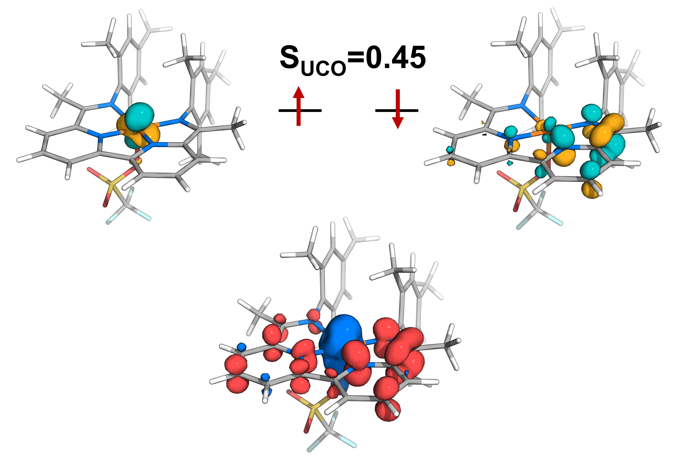
Extensive Redox Non-Innocence in Iron Bipyridine-Diimine Complexes: a Combined Spectroscopic and Computational Study
Ranjeesh Thenarukandiyil, Eno Paenurk, Anthony Wong, Natalia Fridman, Amir Karton, Raanan Carmieli, Gabriel Ménard, Renana Gershoni-Poranne*, and Graham de Ruiter*
Inorganic Chemistry, November 2021
25
Aromaticity
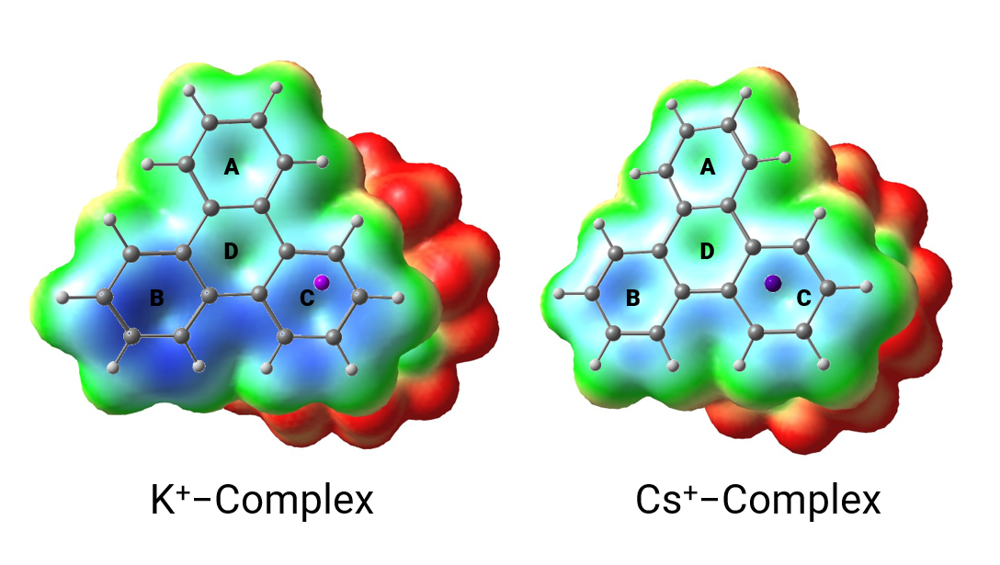
Tuning Magnetic Interactions Between Triphenylene Radicals by Variation of Crystal Packing in Structures with Alkali Metal Counterions
Zheng Zhou, Ökten Üngör, Zheng Wei, Michael Shatruk*, Alexandra Tsybizova, Renana Gershoni-Poranne*, and Marina Petrukhina*
Inorganic Chemistry, September 2021
24
Aromaticity
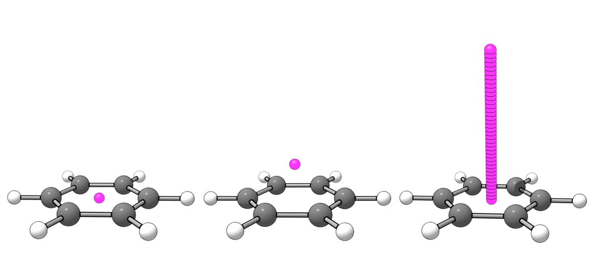
Chapter 4: NICS — Nucleus Independent Chemical Shift
Renana Gershoni-Poranne* and Amnon Stanger*Aromaticity: Modern Computational Methods and Applications, May 2021
Edited by: Israel Fernandez
Published by: Elsevier